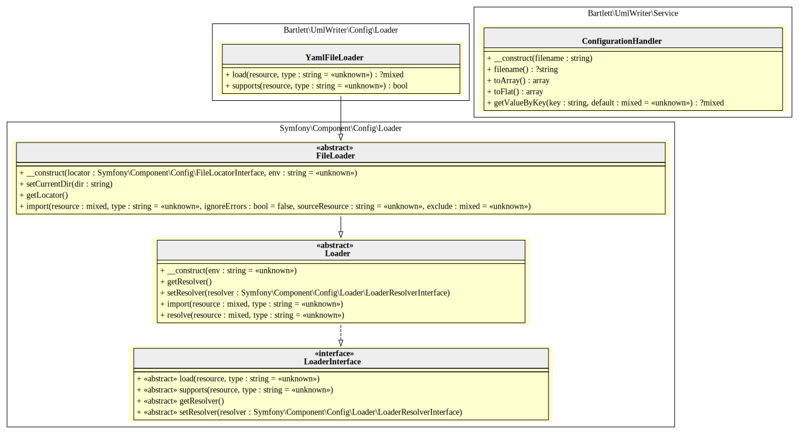

Configuration
UmlWriter v3 can be configured in two ways (YAML file or console command arguments). Without changes, following defaults will be applied.
Defaults
| Option | Value | Default | Description |
|---|---|---|---|
| show_constants | boolean | true | whether to show class constants as readonly static variables (or just omit them completely) |
| show_properties | boolean | true | whether to show class properties |
| show_methods | boolean | true | whether to show class or interface methods |
| show_private | boolean | true | whether to also show private methods/properties |
| show_protected | boolean | true | whether to also show protected methods/properties |
| add_parents | boolean | true | whether to show add parent classes or interfaces |
| only_self | boolean | true | whether to only show methods/properties that are actually defined in this class (and not those merely inherited from base) |
| label_format | string | record | whether to use html or record formatted labels (graphviz specific feature). Others generator may have different values |
| indent_string | string | ' ' | string to indent graph statement parts (two blanks) |
| paths | array | ['src'] | data source (file or directory) to parse |
| generator | string | graphviz | identification returned by getName() method of a class implementing Bartlett\GraphUml\Generator\GeneratorInterface |
| graph.name | string | G | name of the graph |
| graph.overlap | boolean | false | determines if and how node overlaps should be removed. More details at http://graphviz.org/doc/info/attrs.html#d:overlap |
| graph.rankdir | string | TB | sets direction of graph layout (Top to Bottom). See http://graphviz.org/doc/info/attrs.html#d:rankdir |
| node.fontname | string | Verdana | font name to use to draw node of the graph |
| node.fontsize | integer | 8 | font size to draw node of the graph |
| node.shape | string | none | set the shape of nodes |
| node.margin | integer | 0 | see http://graphviz.org/doc/info/attrs.html#d:margin for details |
| node.fillcolor | string | #FEFECE | color used to fill background color of nodes. See http://graphviz.org/doc/info/attrs.html#d:fillcolor |
| node.style | string | filled | see http://graphviz.org/doc/info/attrs.html#d:style |
| edge.fontname | string | Verdana | font name to use to draw edge of the graph |
| edge.fontsize | integer | 8 | font size to draw edge of the graph |
Console command
See all arguments and options details in Console Commands section.
YAML file (example)
Attributes to configure graph (node, edge, cluster) may be found at:
And to configure colors for graphviz and plantuml generators:
parameters:
generator: graphviz
graph:
name: G
overlap: 'false'
rankdir: LR
bgcolor: transparent
node:
fillcolor: '#FEFECE'
style: filled
edge: ~
cluster:
Bartlett\UmlWriter\Console:
graph:
bgcolor: BurlyWood
Symfony\Component\Console:
graph:
bgcolor: LightSteelBlue
Symfony\Contracts\Service:
graph:
bgcolor: LightSteelBlue
paths:
- src/
show_constants: true
show_properties: true
show_methods: true
show_private: false
show_protected: false
Architecture
